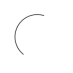

<div class="panel panel-default ng-scope">
	<div class="panel-heading">
		Control de tiempo

		<span class="pull-right"style="padding-right: 15px">
			Horas: {{vm.time.hour}}
			Minutos: {{vm.time.min}}.<span ng-if="vm.showCero">0</span>{{vm.time.sec}}
		</span>
	</div>
	<div class="panel-body" >
		<div class="card">
			<ul class="list-group list-group-flush" id="proyects-list">
				<li class="list-group-item ng-binding ng-scope">	
					<button ng-click="vm.pickProject()" class="btn btn-sm btn-embossed btn-warning btn-wide" type="button" data-toggle="collapse"data-target="#timer-collapse" aria-expanded="false" aria-controls="collapseExample" 

						ng-model="vm.project"
						>
						<span ng-if="!vm.project">
							<span ng-hide="vm.taskSearchState">Seleccionar proyecto</span>
							<span ng-show="vm.taskSearchState"><span class="fa fa-ban"></span> Cancelar </span>
						</span>

						<span ng-if="vm.project">
							{{vm.project.name}}
							<span class="fa fa-check" ></span>
						</span>
						
					</button>
					<!-- Start button -->
					<button class="btn btn-sm btn-embossed btn-success pull-right" title="Rellene la información"ng-if="!vm.counting" ng-click="vm.startCount()" ng-disabled="(!vm.task || !vm.project)">
						<span class="fa fa-play" style="font-size:15px;"></span>
					</button>
					<!-- Stop button -->
					<button class="btn btn-sm btn-embossed btn-danger pull-right" ng-if="vm.counting" ng-click="vm.stopCount()"  ><span class="fa fa-stop" style="font-size:15px;"></span></button>

					<div class="form-group has-feedback pull-left" style="width:400px;">
						<span ng-if="!vm.taskSearchState">
  							<input type="text" class="form-control" ng-if="!vm.taskSearchState" placeholder="Ingrese un comentario / objetivo" style="max-height: 36px" ng-model="vm.task">	
						</span>
						<span ng-if="vm.taskSearchState">
							<span class="form-control-feedback fui-search"></span>							
							<input type="text" class="form-control"  placeholder="Buscar...." style="max-width:475px; max-height: 36px" ng-model="vm.taskSearch">
						</span>		
					</div>
				</li>
			</ul>
			<!-- {{vm.projects}} -->
			<div class="collapse" id="timer-collapse">
				
				<ul class="list-group list-group-flush" id="proyects-list">				

				<li  ng-if="(vm.projects.length == 0 && !vm.loading)" class="list-group-item ng-binding ng-scope">No hay proyectos asignados</li>

				<li nh-hide="!vm.loading" ng-if="vm.projects" class="list-group-item" style="color: black;" >
					<span class="fa fa-th-list"></span> 
					Proyectos asignados				
				</li>		
			
				<li ng-hide="vm.loading" class="list-group-item ng-binding ng-scope" ng-repeat="project in vm.projects | filter:{name:vm.taskSearch}">	
					<span>{{project.name}}</span>
					<button class="btn btn-sm btn-embossed btn-danger pull-right" type="button" data-toggle="collapse" data-target="#timer-collapse" aria-expanded="false" aria-controls="collapseExample" ng-click="vm.setProject(project._id)">Seleccionar</button>
				</li>			
				</ul>

			</div>		  
		</div>
	</div>
	<div class="panel-footer" style="max-height: 3px; padding-bottom: 0; background-color: #e67e22">
		
	</div>
</div>	